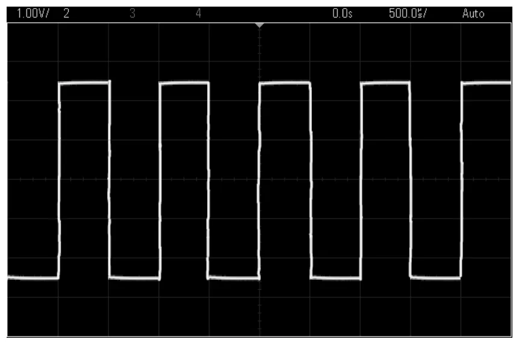
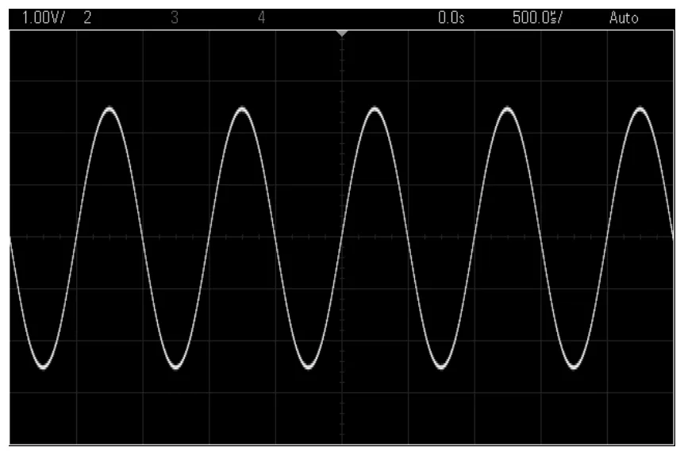
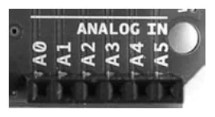

In this section, you’ll learn the difference between digital and analog signals, and you’ll learn how to measure analog signals with the analog input pins.
Until now, our sketches have been using digital electrical signals, with just two discrete levels. Specifically, we used digitalWrite(pin, HIGH) and digitalWrite(pin, LOW) to blink an LED and digitalRead() to measure whether a digital pin had a voltage applied to it (HIGH) or not (LOW). Figure 4-28 is a visual representation of a digital signal that alternates between high and low.

HIGHs appearing as horizontal lines at the top, and LOWs appearing at the bottomUnlike digital signals, analog signals can vary with an indefinite number of steps between high and low. For example, Figure 4-29 shows an ana-log signal of a sine wave. Notice in the figure that as time progresses, the voltage moves fluidly between high and low levels.

With our Arduino, high is closer to 5 V and low is closer to 0 V, or GND. We can measure the voltage values of an analog signal with our Arduino using the six analog inputs shown in Figure 4-30. These analog inputs can safely measure voltages from 0 (GND) to no more than 5 V.

If you use the function analogRead(), then the Arduino will return a number between 0 and 1,023 in proportion to the voltage applied to the analog pin. For example, you might use analogRead() to store the value of analog pin zero in the integer variable a:
a = analogRead(0); // read analog input pin 0 (A0)
// returns 0 to 1023 which is usually 0.000 to 4.995
volts